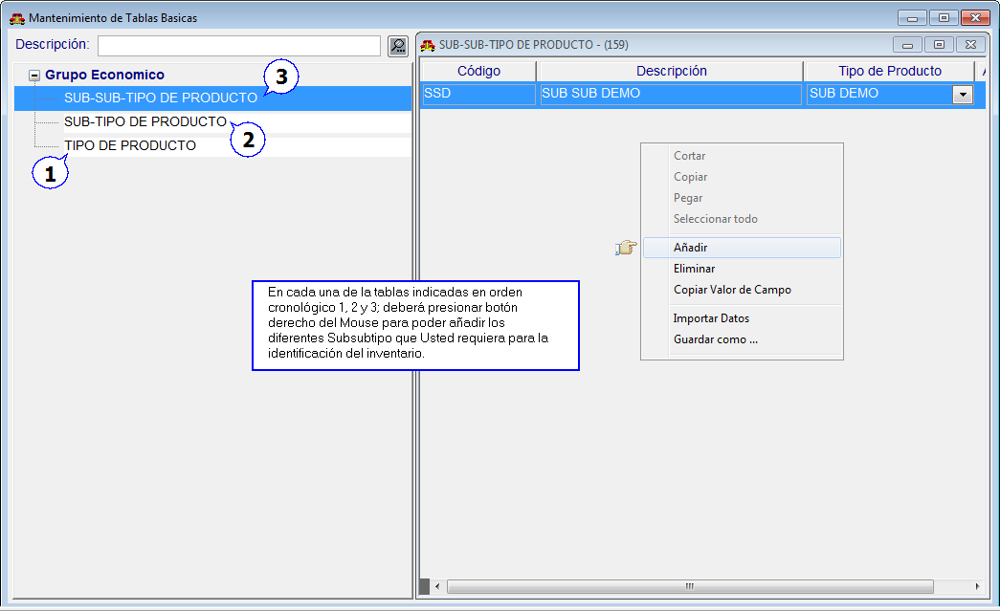

|
Menú General |
  
|
|
Menú General |
|
Datos de Persona Contacto para Publicación de Inventario
Desde el Módulo de Repuestos "Menú General" opción >>General>>Departamentos por Compañía>> podrá indicar los datos tales como nombres y apellidos, números de telefóno y direcciones e-mail de las personas que serán los contactos en el concesionario, lo cual es requisito necesario para el funcionamiento de la publicación de inventario.
Figura. Datos de Persona Contacto en el Concesionario
Factor de Gastos para el Departamento y Factor de Gastos de Producción
Desde el Módulo de Repuestos y también desde el Módulo de Servicio "Menú General" opción >>Parámetros>>, ahora podrá indicar los valores porcentuales que se han de usar para el manejo de los factores de gastos para el departamento y el factor de gastos de producción.
Figura. Parámetros de Factor de Gastos
Desde el Módulo de Repuestos "Menú General" opción >>Tablas Básicas>>, podrá crear los subtipos de los subtipos de los productos. El llenado de éstas tablas son condición para el llenado completo de los productos en "Menú Inventario" opción >>Ficha de Repuestos>> y "Menú Inventario" opción >>Códigos Unificados>>.
Figura. Tablas Básicas de Subtipo y Subsubtipo

Volver a Índice de Módulo Administrativo
Volver al Índice de Módulos Operativos